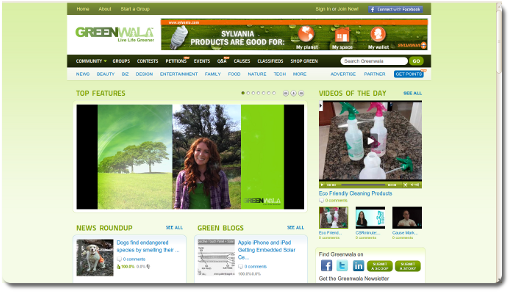

-

http://www.giveatweet.com/
Twitter API, CouchDB, MySQL, Ruby On Rails. -

http://www.sugartats.com/
SMS, Trust Commerce, MySQL, Ruby On Rails. -

http://www.greenwala.com/
Merb, Facebook API, MySQL, Ruby On Rails. -

http://trade.claimchaser.com/
EDI, Facebook API, MySQL, Ruby On Rails.